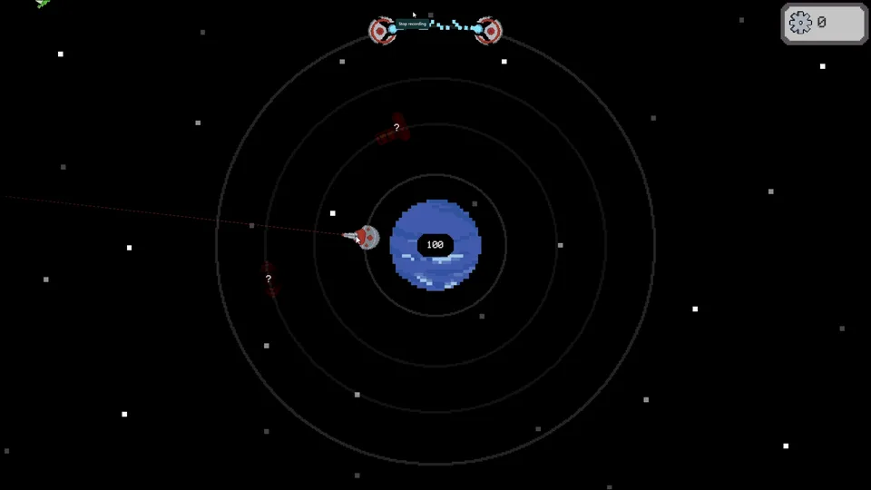

Aiming by position
Satellites stay locked to their orbit and every one fires straight outward. Dragging a satellite around the orbit changes where its line of fire points, so positioning is the core skill: line up shots so that they cross an incoming ship's path.
